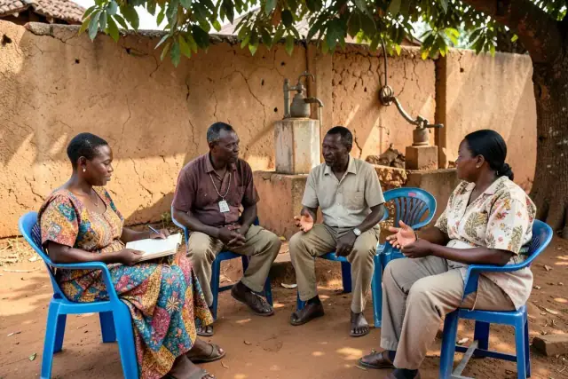

our work
eight programme lines
01 — what we do
A hand pump is not safe water. A hand pump that still works in five years is.
Eight kinds of work, one chain: water, sanitation, hygiene, and the people who keep them. Each line has its own budget, its own field team and its own record.
Funders can pick one, or fund the whole chain.
01Boreholes & wellsDrilling, test-pumping and handing over safe water points.view
02Mechanisation & piped systemsSolar pumps, storage and standpipes where a hand pump is not enough.view
03Sanitation & latrinesHousehold and institutional latrines, sited away from water sources.view
04Hygiene educationHandwashing, safe storage and household hygiene, taught locally.view
05WASH in schoolsWater, latrines and hygiene clubs in primary schools.view
06Community trainingCaretakers, water committees and local masons, trained and equipped.view
07Assessments & surveysBaseline evidence and costed proposals before a single hole is dug.view
08Operations & maintenanceRepairs, monitoring and the five-year functionality record.view

02 — how it fits together
Engineering builds it. Community makes it used. Administration accounts for it.
Every project runs through the same three departments — which is why we can budget on the same three lines and report against them.
03 — next
Fund a line, or the whole chain.
Institutional partners fund a programme line with quarterly reporting and site visits built in. Individuals fund a water point, a repair, or the hygiene work that makes either of them matter.